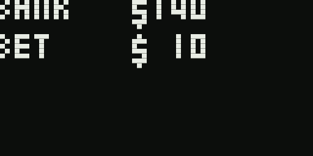
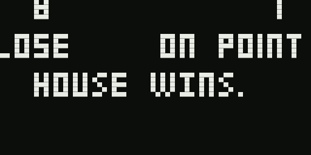

Craps
R.G. Davis · DREAMER no. 15 (1981-11) p. 10 1K RAM



Two dice are thrown with any key. A first throw of 7 or 11 wins and 2, 3 or 12 loses; any other total becomes your point, and you keep throwing until you hit it (win) or a 7 (lose).
Keys
Any key throws the dice.
Files
| File | Version | Load | Run |
|---|---|---|---|
| Craps.d68 | main | 0080-03FF | C000 |
Listing as transcribed (with notes): craps.txt
Source
DREAMER no. 15 on archive.org, p. 10 (PDF page 12). Author: R.G. Davis.
Corrections applied
None.
Open doubts
None.